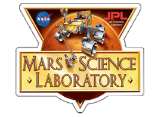

AI and cybersecurity engineer building secure systems, LLM automation, and practical software products. Currently supporting satellite systems at Lockheed Martin Space while completing my M.S. in Computer Science at the University of Colorado Boulder.

Impact Highlights
National Security Systems
Supporting cybersecurity, software assurance, accreditation, and AI-powered automation for satellite systems, after transitioning from intern to full-time on the same team.
Production AI Infrastructure
Built zero-trust Docker and Kubernetes deployments with PGVector, Braintrust observability, and research on vLLM migration to cut inference costs by ~95% long term.
Cross-Functional Leadership
Led Agile sprints for agentic LangGraph systems and frontend redesigns, scaling teams and shipping production features with RAG pipelines and CI/CD.
Mars Systems R&D
Power Anomaly Detection for the Curiosity Rover
I engineered a supervised anomaly detector for NASA's Mars Curiosity Rover power telemetry, balancing a 2% minority class to reach a perfect 1.0 PR-AUC. The stack combines Python, scikit-learn, Pandas, NumPy, SciPy, Matplotlib, Seaborn, and Jupyter for reproducible experimentation.

My Journey
My path into technology started with a computer science degree from CU Boulder. Early on, I discovered a passion for how different fields intersect, blending elegant design principles with the immersive experiences of gaming and the solid engineering of full-stack development. To me, these are not isolated skills but complementary parts of a whole. Crafting an intuitive user experience in a complex simulation shares the same core challenges as in a compelling game. My work building full-stack applications has given me a deep understanding of how to translate these ideas into reality, from database architecture to the final user interface.
AI in Action
This systems-level perspective is the foundation of my work in AI, where I focus on building and leading the development of agentic systems. It's a role that spans the full product lifecycle, from hands-on engineering and architecture to strategic leadership. At The Verse, for example, I led the AI product strategy for the WalkXR therapeutic platform by authoring the 0-to-1 roadmap for its multi-agent OS, designing the agentic framework with LangGraph, and engineering the core RAG system. A key part of this was developing a constitutional AI safety layer with an RLAIF/DPO loop for continuous model alignment.
My current work as an AI platform engineer at We Own AI expands on this foundation, where I build Kubernetes infrastructure with Helm and create reusable agentic playbooks for cloud-native automation. This infrastructure now powers the AI deployments showcased across my portfolio.
Future Focus
My work architecting agentic frameworks has clarified my trajectory toward leading autonomous systems research. The core principles of building systems that perceive, reason, and act are the same ones that drive the future of autonomy. I see a direct line from my experience with multi-agent systems and cloud infrastructure to the complex challenges in space, ocean, polar, and field environments, including autonomous navigation, intelligent reconnaissance, and sophisticated human-AI teaming.
In the near term, I'm seeking 2026 summer internships with labs focused on real-world AI deployment, where I can apply my platform engineering experience to mission-critical research. Long-term, my goal is to lead autonomous systems missions or research programs, combining my technical foundation in cloud-native AI with the advanced robotics and geospatial ML expertise I'm developing through my MS-AI program.
Education Goals
To bridge my current platform engineering expertise with research leadership, I am pursuing a Master of Science in Artificial Intelligence and a Graduate Certificate in Engineering Management at CU Boulder. This dual program provides me with the advanced technical knowledge in autonomy, robotics, and geospatial ML needed for cutting-edge research, while developing the strategic leadership and systems thinking skills essential for directing mission-critical projects. The specialized coursework directly prepares me for summer internships in real-world AI labs and my long-term goal of leading autonomous systems research in challenging environments.
Beyond Tech
Beyond my technical pursuits, I balanced my undergraduate studies as a D1 ACHA hockey player. I continue to enjoy staying active, whether it's on the ice, snowboarding, hiking, biking, or at the gym.
Interests
Technical Toolkit
Languages
Python, C++, C, SQL, Bash
Cloud & DevOps
Linux, Git, Docker, Kubernetes, Helm, GitHub Actions, YAML, AWS, DigitalOcean
AI/ML & LLMs
scikit-learn, Pandas, NumPy, SciPy, Matplotlib, LangGraph, Ollama, OpenRouter API, Braintrust, RAG, MCP
Databases & Tools
PostgreSQL, PGVector, MongoDB, Infisical, GitHub Copilot, Claude Code, n8n, Jira